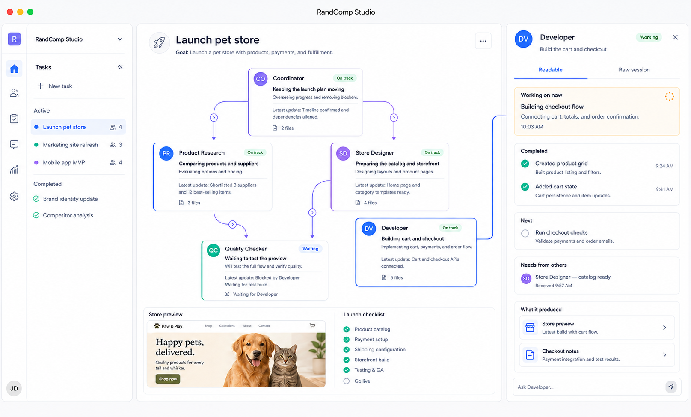

1
在 Mac 前
在桌面应用中看清整个任务。
先描述结果，确认允许使用的角色，然后观察任务树形成。每个节点都说明这个角色正在做什么、在等待什么、产生了什么。选择节点即可阅读或纠正工作。
桌面应用 · 可视化控制{kind=link}

本地 AI 智能体团队控制中心
RandComp Studio 是一款本地桌面应用，围绕同一个任务组织多个独立的命令行 AI 会话。你可以在一个地方查看每个角色正在做什么、跟踪交接、回答问题，并检查团队最终完成的成果。
本地优先 · 沿用你已有的命令行 AI 智能体 · Apple 芯片，macOS 11+

跟随一个完整工作过程
先在 Mac 上启动，离开桌面后继续检查，再从另一个 AI 会话中指挥。RandComp 不会因此复制出三个任务。
示例目标：“上线一个小型在线商店。让产品确定范围，开发负责实现，质检独立验证。”
在 Mac 前
先描述结果，确认允许使用的角色，然后观察任务树形成。每个节点都说明这个角色正在做什么、在等待什么、产生了什么。选择节点即可阅读或纠正工作。
桌面应用 · 可视化控制
离开桌面后
会话继续在远程电脑上运行。使用轻量命令行查看哪里需要你、阅读智能体、回答问题或直接进入会话，无需传输整个桌面画面。
CLI · 低带宽远程控制$ randcomp status
在线商店 · 3 个角色工作中 · 1 项需要你
开发询问：是否复用现有结账设计？
$ randcomp agent send developer-2 "是，复用现有设计。"
已发送给开发。
在你的 AI 会话中
继续用自然语言和 AI 会话交流。请它检查 RandComp、总结团队状态，或把你的决定传给某个角色。MCP 把这段对话连接到同一个本地任务。
MCP · 对话式控制工作返回时
RandComp 把成功清单、交接材料、文件和最终结果带回任务。打开与成果类型匹配的预览，检查证据，只有在你认可后才结束任务。
成果 · 看证据，不看会话噪音
智能体大军背后的隐藏成本
更多智能体并不一定更好，隐藏的陷阱却是 Token 成本：每个会话都要读取上下文，协调也会继续消耗。简单工作交给一个专注会话；只有当并行工作或独立验证物有所值时，才组建团队。
小而独立的工作
一个全新的前端会话，可能比五个智能体重复读取同一个项目更快、更省。无需额外规划和无意义的交接。
有关联、风险更高的工作
只有当独立上下文、并行专业分工和独立验证确实值得额外 Token 与协调成本时，才使用更多角色。


工作长期保存，上下文不必永久膨胀
持久状态是普通 Markdown：角色指令、任务目标、决定、消息、交接和成果。会话完成工作后可以停止。之后的新会话，甚至另一个受支持的 CLI，都能从保存的工作恢复，而不必继承每一个旧 Token。
从本机开始
下载并打开磁盘映像，把 RandComp Studio 拖入“应用程序”。首次运行时选择公司文件夹的位置。
Apple 芯片 · macOS 11+ · 24M
SHA-256 e5fe0ab98dbbf71408cb5c3b0f9537f89f59a15904139950102abe73dfd8d9b8
从应用菜单安装附带的 randcomp 命令。通过 SSH 直接使用，或把同一个本地进程注册到支持 MCP 的 AI 客户端。
randcomp status randcomp agent list TASK_ID # MCP 客户端运行： randcomp mcp